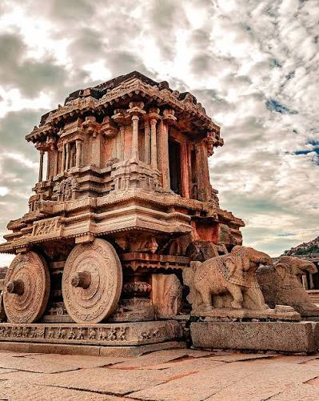
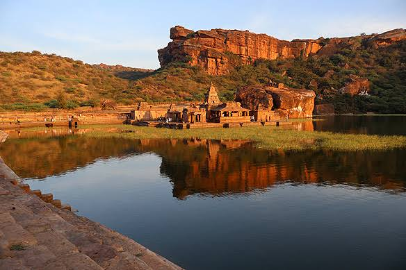
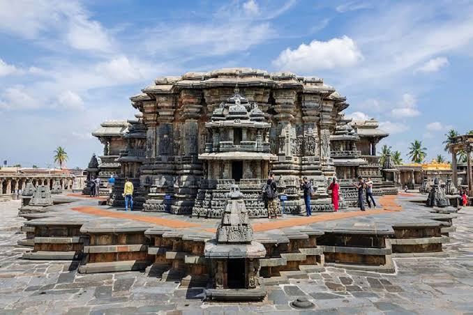
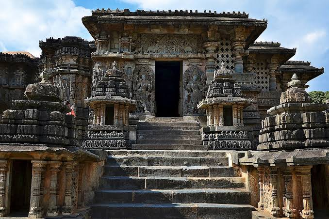

Historical Places
-

Hampi
Hampi was the capital of the Vijayanagara Empire. It is famous for its ancient temples, royal structures, stone chariot and impressive architecture. It is recognised as a UNESCO World Heritage Site.
-

Mysore Palace
Mysore Palace is one of the most famous royal palaces in India. It was the residence of the Wodeyar dynasty and is admired for its Indo-Saracenic architecture, beautiful halls and decorative interiors.
-

Badami Cave Temples
The Badami Cave Temples were built during the Chalukya period. These rock-cut caves contain beautiful sculptures and carvings dedicated to Hindu and Jain traditions.
-

Belur - Chennakesava Temple
The Chennakesava Temple in Belur is famous for its detailed stone carvings and Hoysala architecture. It is an excellent example of the artistic achievements of ancient Karnataka.
-

Halebidu - Hoysaleswara Temple
Halebidu is known for the Hoysaleswara Temple, which features detailed sculptures depicting gods, animals, dancers and scenes from Indian epics.